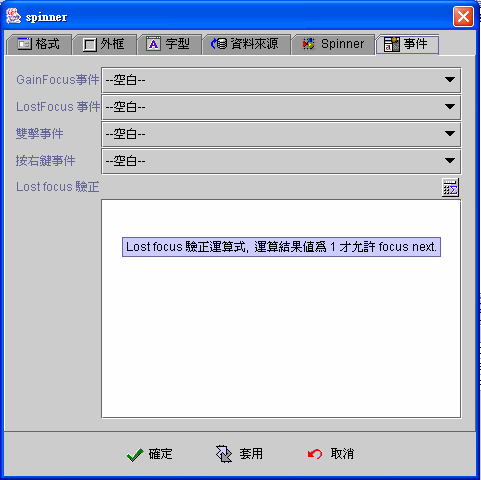

|

Spinner 元件 (Spinner component)

共同屬性 (common properties)
資料來源 (data source)
Spinner 屬性 (Spinner properties)
事件 (event)
運算式屬性存取
(formula get/set properties)
Spinner 元件(Spinner component)，使用於數值資料的顯示(display)、輸入(input)、修改(update)，元件允許使用者輸入數值或按下元件右邊的上下按鈕以內定步進值
(step size) 增減數值輸入。設計師可以設定最小值
(minimum) 及最大值 (maximum)
，如果有最大最小值限制，使用者將不允許輸入超過範圍的數值，輸入錯誤時系統會自動回復原正確值。可以選擇連結
(binding) 資料欄位 (data
field) 或使用運算式 (formula) 為元件內含值，當使用運算式時，有任何的視窗資料來源
(data
source) 移動資料記錄、存檔、刪除或其他元件值內含值改變
(changed) 時，運算式 (formula) 將會自動重新計算，即時同步更新。當運算式的結果值或連結資料欄位值小於或大於屬性設定的內含值範圍
(value boundary) 時，元件會發出 Beep 聲，不接受輸入值。
資料來源 (data source)
-
資料來源
(data source)：選取資料來源。
-
資料欄位
(data field)：選取資料欄位。
-
使用運算式 (use formula)：使用運算式
(formula) 顯示運算後的結果，當視窗資料來源 (data source)
移動資料記錄、存檔、刪除或其他元件值內含值改變 (changed) 時，運算式
(formula) 將會自動重新計算即時同步更新。
-
只有在初始化時作用 (initial only)：運算式
(formula)
只在視窗開啟後，計算運算式並將結果顯示於元件中，之後即不再自動計算更新
(compute and refresh)，設計師必須透過【設定元件內含值】的事件
(set component data event)，或重新計算以 SetProp()
的運算公式更新。
▲Top
Spinner 屬性 (Spinner properties)
-
數值 (data value)：是否只允許整數資料。
-
最小值 (minimum)：Spinner
允許的最小值。不設定(留空)，則 Spinner 不設定下限值。
-
最大值 (maximum)：Spinner
允許的最大值。不設定(留空)，則 Spinner 不設定上限值。
-
步進值 (step size)
：Spinner
每次按下右邊上下按鈕的增減值。必要設定欄位。
▲Top
事件 (event)
-
Gain
Focus 事件：當 Focus 移入 Spinner 時，即引發事件 。
-
Lost
Focus 事件：當 Focus 移出 Spinner 時，即引發事件 。
-
雙擊事件
(double clicked event)：當雙擊滑鼠的左鍵時，即引發事件。
-
按右鍵事件
(right clicked event)：當按下滑鼠右鍵時，即引發事件。

▲Top
運算式屬性存取
(formula get/set properties)
SetProp("元件名稱",
"屬性", 值) ：屬性設定。
SetProp("元件名稱",
"屬性", 值1, 值2)：屬性設定。
GetProp("元件名稱",
"屬性")：屬性讀取。
| Set
Properties |
| 屬性
(Properties) |
值1
(Value 1) |
值2
(Value 2) |
說明 (Descriptions) |
| enabled |
1 致能，0 失效 |
|
致能與失效。 |
| setfocus |
1 設定 Focus |
|
設定 Focus。 |
| visible |
1 顯示，0 隱藏 |
|
顯示與隱藏。 |
| repaint |
1 重繪，2
立即重繪 |
|
重繪。 |
| revalidate |
1 運算式重新計算 |
|
運算式重新計算。 |
| value |
N 內含值 |
|
設定Spinner內含值為 N。 |
| bg |
RGB(red, green, blue) |
|
背景顏色。值1 必須以Formula 的 RGB() 運算式給值。
|
| fg |
RGB(red, green, blue) |
|
前景顏色。值1 必須以Formula 的 RGB() 運算式給值。
|
| x |
正整數值 |
|
左座標位置。 |
| y |
正整數值 |
|
上座標位置。 |
| w |
正整數值 |
|
元件寬度。 |
| h |
正整數值 |
|
元件高度。 |
| xy |
正整數值 |
正整數值 |
左(Value1) 上(Value2) 座標位置。 |
| wh |
正整數值 |
正整數值 |
元件寬(Value1) 高(value2)度。 |
| Get
Properties |
| 屬性
(Properties) |
傳回值
(Return value) |
說明 (Descriptions) |
| isenabled |
1 致能，0 失效 |
致能與失效。 |
| isvisible |
1 顯示，0 隱藏 |
顯示與隱藏。 |
| value |
N 內含值 |
讀取 Spinner 目前內含值。 |
| x |
整數值 |
左座標位置。 |
| y |
整數值 |
上座標位置。 |
| w |
整數值 |
元件寬度。 |
| h |
整數值 |
元件高度。 |
▲Top
Copyright © 2001~
2004 Probe Technology . All Rights Reserved.
Questions, comments,
and suggestions to Service@probe.com.tw
|